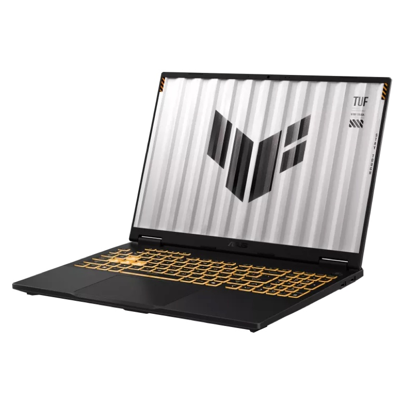

מחיר למזומןASUS TUF Gaming F16
i7-14650HX · RTX 5060 · 32GB DDR5 · 16 אינץ'
מחשב נייד חזק לגרפיקה, תלת-ממד, עריכת וידאו וגיימינג: מעבד Intel Core i7 מסדרת HX עם 16 ליבות, כרטיס מסך NVIDIA GeForce RTX 5060 בהספק מלא של עד 115W, 32GB זיכרון DDR5 1TB SSD ומסך 16 אינץ' 165Hz. מגיע עם Windows 11. מבנה קשיח בתקן MIL-STD-810H וסוללה גדולה של 90Wh.
🎮
NVIDIA GeForce RTX 5060
8GB GDDR7 · עד 115W
כרטיס מסך מהדור החדש עם DLSS 4 ו-Ray Tracing: תוכנות תלת-ממד, הדמיות, עריכת וידאו ומשחקים בהגדרות גבוהות.
⚡
Intel Core i7-14650HX
16 ליבות · עד 5.2GHz
מעבד מסדרת HX החזקה: 8 ליבות ביצועים ו-8 ליבות יעילות, 24 תהליכונים ומטמון 30MB.
- 🖥מסך 16 אינץ' 165HzFHD+ (1920×1200) IPS ביחס 16:10, מט נגד השתקפויות
- 🧠32GB DDR5שני חריצים, ניתן להרחבה עד 64GB
- 🔋סוללה 90Whו-Thunderbolt 4 לחיבור מסכים ועמדת עגינה
- 🛡מבנה בתקן MIL-STD-810Hעמידות צבאית לזעזועים, לרעידות ולטמפרטורות
מחיר למזומן · כולל מע״מ והתקנות
₪7,590
💵 מחיר למזומן
✓ כולל התקנות מלאות
🚚 משלוח חינם
🪟 Windows 11
למי זה מתאים?
📐
תלת-ממד ואדריכלות
RTX 5060 עם 8GB ו-16 ליבות: מודלים, שרטוט והדמיות בצורה חלקה.
🎬
עריכת וידאו וגרפיקה
32GB זיכרון, מעבד HX וכרטיס מסך עם מקודד וידאו מהיר.
🎮
גיימינג
מסך 165Hz ו-RTX 5060 עם DLSS 4: משחקים חלקים בהגדרות גבוהות.
מחשב נייד עם כרטיס מסך בהספק מלא, במשקל 2.2 ק"ג. המחיר הוא לתשלום במזומן. התמונות להמחשה.
מפרט
| מעבד | Intel Core i7-14650HX: 16 ליבות (8 ביצועים + 8 יעילות) / 24 תהליכונים, עד 5.2GHz, מטמון 30MB |
|---|---|
| כרטיס מסך | NVIDIA GeForce RTX 5060 8GB GDDR7, עד 115W |
| זיכרון | 32GB DDR5, 2 חריצים, ניתן להרחבה עד 64GB |
| אחסון | 1TB SSD M.2 NVMe PCIe 4.0 |
| מסך | 16 אינץ' FHD+ (1920×1200) IPS, 16:10, 165Hz, מט |
|---|---|
| יציאות | Thunderbolt 4 (40Gbps, DisplayPort) USB-C 3.2 Gen 2 (DisplayPort וטעינה) 3× USB-A 3.2 Gen 2 HDMI 2.1, רשת RJ-45, שקע אוזניות |
| תקשורת | Wi-Fi 6E (2x2) + Bluetooth, רשת קווית |
| מצלמה ושמע | מצלמת FHD עם IR לכניסה בזיהוי פנים (Windows Hello) · Dolby Atmos |
| מקלדת | מוארת RGB, עם מקשי מספרים |
|---|---|
| סוללה | 90Wh (4 תאים) |
| משקל ומידות | 2.2 ק"ג · 35.4 × 26.9 × 1.79-2.73 ס"מ |
| עמידות | תקן צבאי MIL-STD-810H |
| מערכת הפעלה | Windows 11, כולל התקנות מלאות |
| דגם | ASUS TUF Gaming F16 (FX608JMR) |
המפרט לפי נתוני היצרן (ASUS) והיבואן ועשוי להשתנות. התמונות להמחשה בלבד.